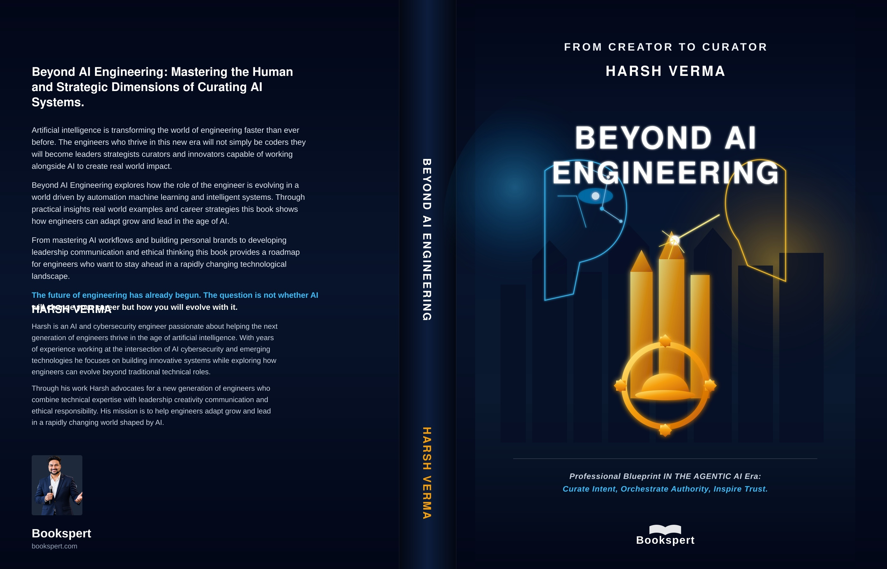
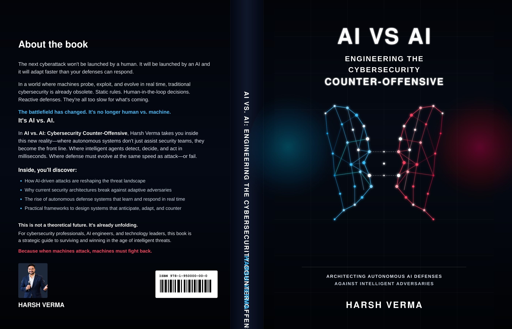
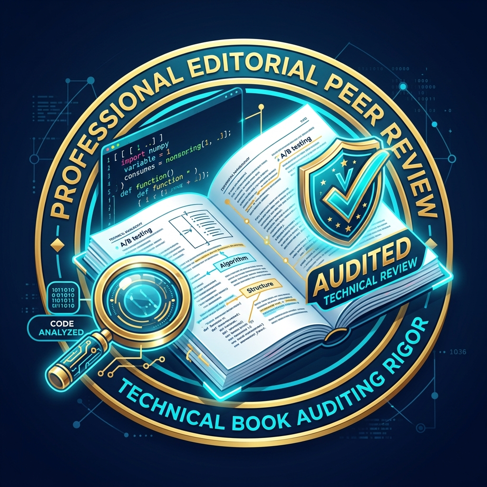

Books on AI Agentic Leadership & Cyber Counteroffensives
Translating cutting-edge scientific research and production engineering into actionable playbooks for engineers, architects, founders, and security leaders navigating the AI agent revolution.


Fullscreen JacketBeyond AI Engineering: From Creator to Curator
Mastering the Human and Strategic Dimensions of Curating AI Systems
The engineers who thrive in the age of artificial intelligence will not simply be code-writers—they will become leaders, strategists, curators, and innovators. Beyond AI Engineering provides a definitive career blueprint for engineers and technical leaders to transition into a Super Engineer operating masterfully across Product Strategy, System Architecture, and Enterprise Authority.
From Creator to Curator
Transitioning from writing raw lines of code to orchestrating, evaluating, and curating autonomous multi-agent pipelines with deterministic precision.
The Super Engineer Trifecta
Mastering the high-leverage intersection of Product Viability, Deep Technical Architecture, and High-Impact Sales/Solutions Engineering.
Authentic Brand & Authority
Building undeniable authority and a resilient personal brand in a crowded market flooded with automated, generic AI content.
Cross-Domain Polymathy
Accelerating multi-domain mastery through agentic workflows, synthesis frameworks, and real-world system delivery.
Interactive Chapter Breakdown:
Profile Acceleration Platform: ProfileGenius by Career Accelerator
In Beyond AI Engineering, building an authentic professional brand is paired with practical toolchains. The book profiles platforms like ProfileGenius to systematically analyze and elevate your complete LinkedIn presence:


Fullscreen JacketAI vs. AI: Engineering the Cybersecurity Counteroffensive
Architecting Autonomous AI Defenses Against Intelligent Adversaries
The next cyberattack won't be launched by a human. It will be launched by an AI—and it will adapt faster than static human defenses can respond. AI vs. AI provides the technical architecture for autonomous self-healing security meshes, dynamic deception graphs, and intelligent counteroffensive agents that neutralize threats at machine speed.
Machine-Speed Attack Dynamics
Dissecting how adversaries weaponize LLMs for polymorphic payload generation, credential harvesting, and multi-agent reconnaissance.
Trust Graphs & Emergent Risk
Modeling multi-agent trust topologies and closing systemic privilege escalation vulnerabilities before they manifest.
Self-Healing Security Meshes
Engineering autonomous detection and remediation loops that patch zero-day exploits and revert compromised state in real time.
Intent-Centric Zero Trust
Shifting from static identity token validation to semantic intent verification across autonomous agentic executions.
Interactive Chapter Breakdown:
Books Reviewed & In-Progress Reviews
Invited peer reviewer and technical editorial contributor for prominent computer science, artificial intelligence, and quantitative engineering titles published by Packt Publishing and global academic press.

AI Ethics in Action
A pragmatic blueprint for applying artificial intelligence ethics to solve complex enterprise dilemmas, establishing measurable governance frameworks, and navigating real-world regulatory scenarios.

Hands-On AI Dev with Python
A hands-on implementation guide bridging machine learning theory and production deployment, focusing on portfolio-ready models, NLP sentiment analysis, and web service integration.

Leadership at the Helm of AI
Strategic blueprint for technology executives, VP of Engineering, and senior leaders steering organizational transition toward autonomous multi-agent systems and defensible enterprise value.

Python for Algorithmic Trading Cookbook
Comprehensive cookbook offering 68+ modern recipes, 17 modular trading applications, GPU-focused performance scripts, and production brokerage connectivity for automated quantitative finance.

Machine Learning & Generative AI for Marketing
Bridging data science and marketing strategy to forecast customer behaviors, run rigorous multivariate experiments, and generate hyper-personalized marketing content using modern generative models.

The TensorFlow Workshop
A hands-on guide to building deep learning models from scratch using real-world datasets with the TensorFlow framework, custom loss functions, optimizers, and TensorBoard diagnostic monitoring.

Editorial & Peer Review Rigor
Accredited ReviewerHarsh Verma audits code validity, algorithmic integrity, and systems architecture across commercial AI publications to uphold rigorous engineering standards for the global developer ecosystem.